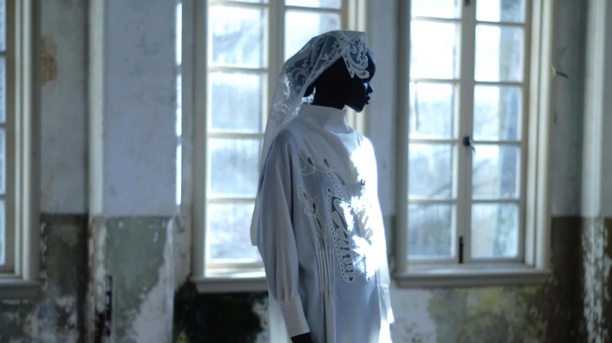
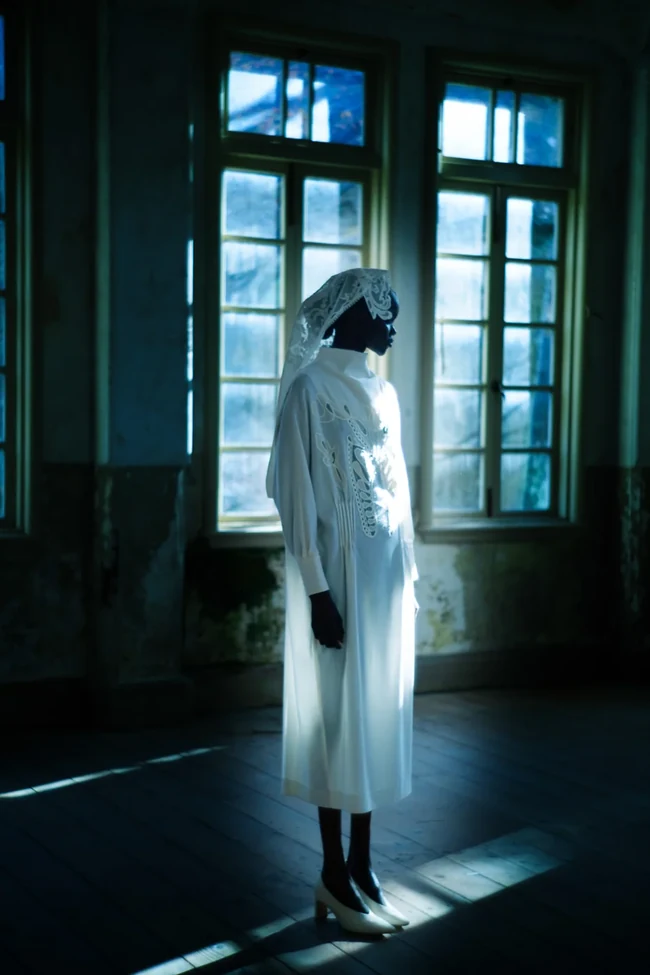
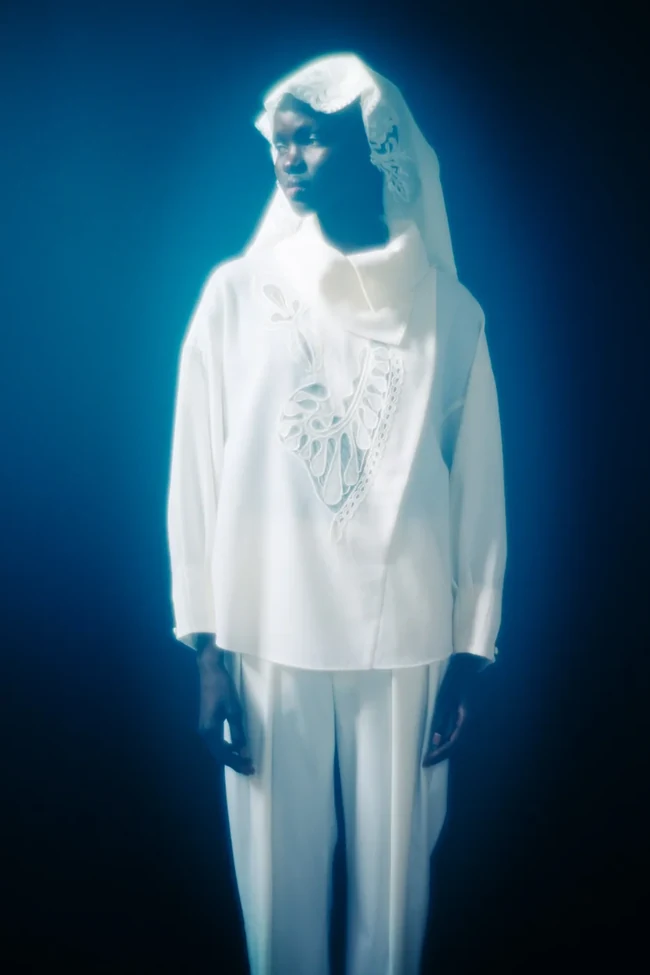
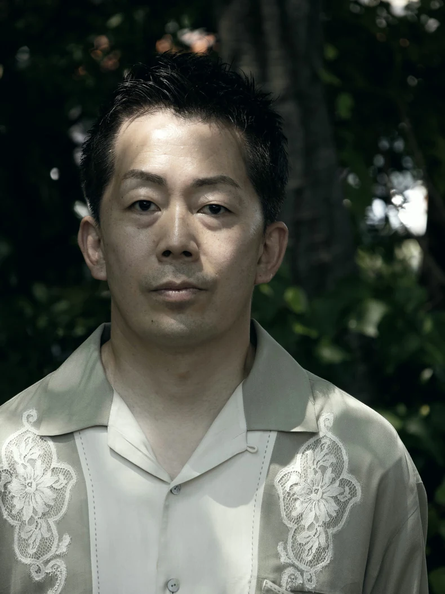
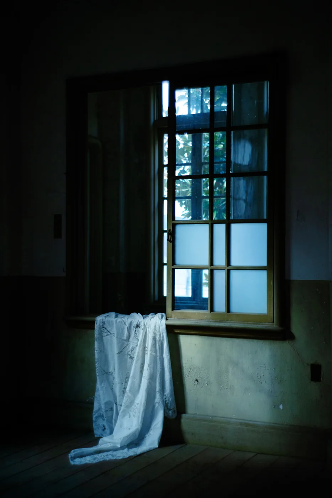

〒100-0011
さえら 帝国ホテル東京店
東京都千代田区内幸町1-1-1
帝国ホテル本館 B1F アーケード
- TEL
- 03-3591-5050
- OPEN
- 10:00 ~ 19:00
- 定休日
- 不定休

The Veil


レースは、飾りではない。
1974年、岡山。
株式会社さえらが半世紀かけて育てた
レースの美学を、
デザイナー関谷竜平に託した特別なライン。
一針に宿る時間を、
身体と空気まで含めた
造形として捉える。
纏う人と共鳴し、静かな光を放つ
唯一無二の彫刻へ。

The Light
レース越しの、輪郭。
静止が、ほどける。
The Cloth

〒100-0011
東京都千代田区内幸町1-1-1
帝国ホテル本館 B1F アーケード
〒100-0011
東京都千代田区内幸町1-1-1
帝国ホテルプラザ 1F
〒460-0008
愛知県名古屋市中区栄1-3-3
名古屋ヒルトンプラザ B1F
〒530-0042
大阪府大阪市北区天満橋1-8-50
帝国ホテル大阪 B1F
〒980-0014
宮城県仙台市青葉区本町2-17-1
本町Nビル 1F
〒840-0826
佐賀県佐賀市白山1-1-11
二神ビル 1F